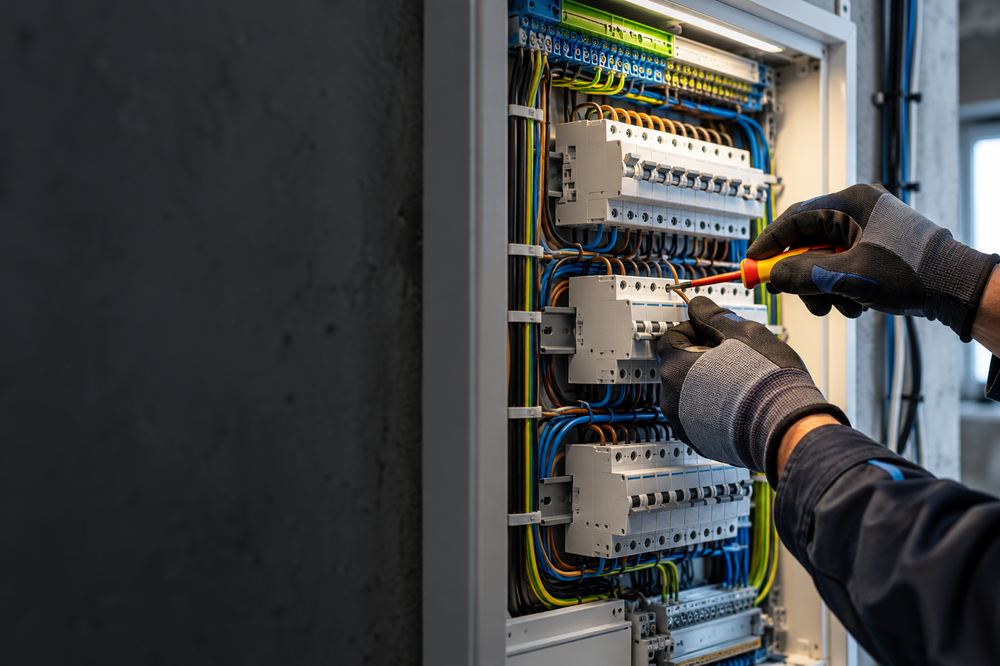

Elektroinstalace
Konkrétní rozsah a termín vždy domluvíme podle zadání.

Elektrikářské práce a elektroinstalace v Ústí nad Labem a okolí.
Konkrétní rozsah a termín vždy domluvíme podle zadání.
Konkrétní rozsah a termín vždy domluvíme podle zadání.
Konkrétní rozsah a termín vždy domluvíme podle zadání.
Konkrétní rozsah a termín vždy domluvíme podle zadání.
Elektrikářské práce a elektroinstalace v Ústí nad Labem a okolí. Nejdříve si upřesníme situaci, rozsah práce a vhodný termín. Díky tomu dostanete postup, který odpovídá vašemu konkrétnímu zadání.
Veřejný profil uvádí profesionální elektrikářské práce pro Ústí nad Labem a okolí.
Uvedené služby a kontakty vycházejí z veřejně dostupných firemních profilů. Fotografie je ilustrační oborový vizuál.
Zavolejte nebo napište. Podle typu práce a lokality se domluví další krok.
Stačí stručně popsat situaci, místo realizace a přibližný rozsah. Pokud máte fotografie, můžete je zmínit při prvním kontaktu.
Použijte telefon nebo e-mail uvedený níže. Přesný rozsah se potvrdí individuálně.
Sládkova, 400 01 Ústí nad Labem
Ústí nad Labem
Termín a další postup domluvíte přímo po telefonu.
Zavolat +420 720 421 627